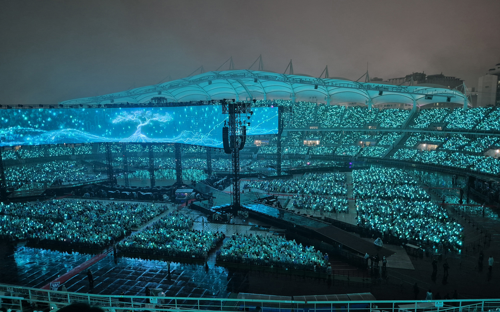
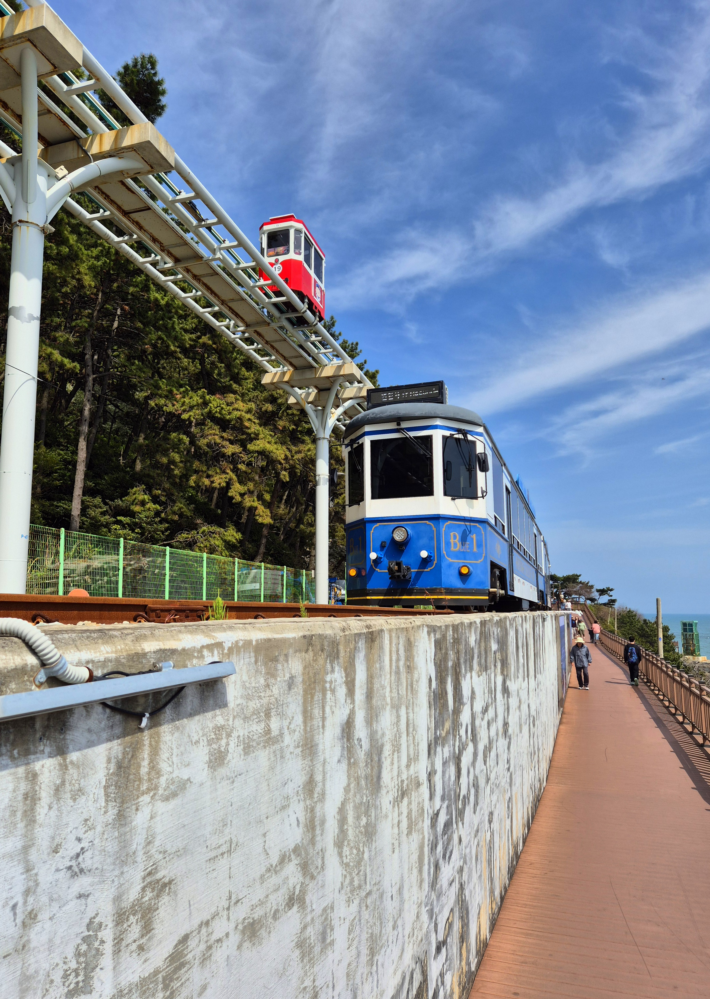
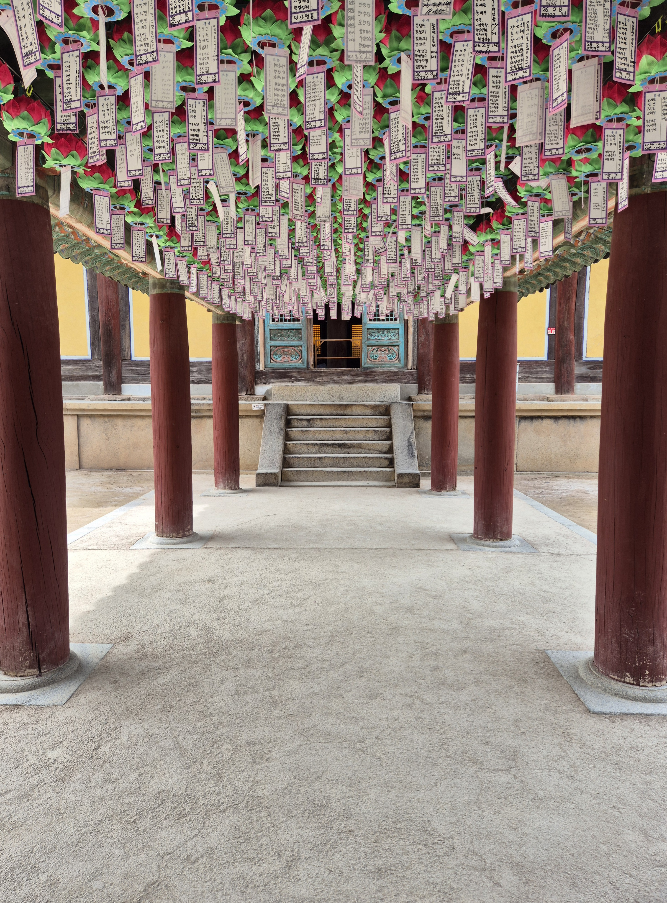

Tranformationer
Man ændrer på visningen af elementer - omformer og flytter dem
Øvelse L2.3
En side med 4 div'er
- Første div: vises på hovedet = rotate 180deg
- Anden div: to billeder. 1) halv størrelse, rotér 45deg om venstre hjørne & 2) en halv gange større, rotér 90deg om højre hjørne
- Tredje div: ét billede. Ramme omkring, men billedet er flyttet ud til højre, præcis udenfor rammen
- Fjerde div: tekst. Rotér teksten 10deg, ret kanterne op med skew. Evt. rettes teksten op med skew i modsat retning



Her har vi et tekststykke i den fjerde div, som kan roteres